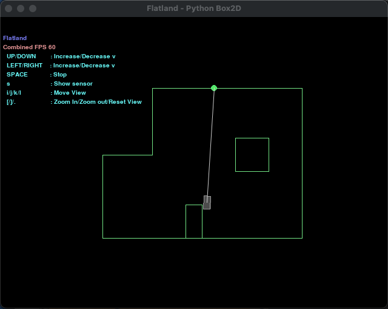
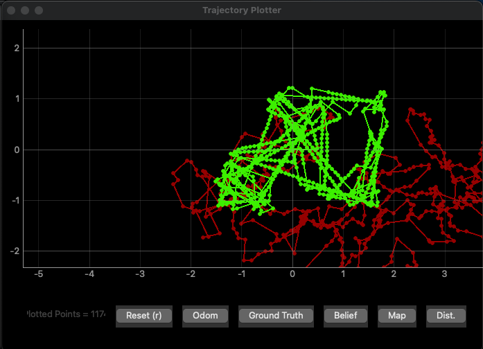

Overview
In this lab, we are getting familiar with the simulation environment. The simulation environment is a piece of software based on Python. It provides a virtual map and a virtual robot. The robot can be controlled from Python program, or we can manually control the robot with keyboard. The virtual robot provides data that can be used for analysis. This includes a distance sensor at the front of the robot, odometry readings, and the ground truth of robot location. The sensor readings will come with noise. The simulation environment also provides a 2D plotter, on which we can plot odometry readings and the ground truth trajectories.
At the end of the lab, we will implement (a) open loop control of the robot, which will be traveling a square loop, and (b) closed loop obstacle avoidance control.
Development Environment
To make the computer ready for the simulation environment, there are a couple of steps we should do:
- Use Python 3.10 and get pip up-to-date
- Install some packages with
pip:numpy pygame pyqt5 pyqtgraph pyyaml ipywidgets colorama - Install Box2D library
- Test the example notebook provided by the instructors
Simulation Software Suite
The simulator is not a simple and small software package, so there is only so much I can cover in this webpage...
Configurations
Configurations are stored in two yaml files in config/ directory. There are two files inside: plotter.yaml and world.yaml. plotter.yaml is a short file, things like the size of the plot simple and thickness of plot lines can be configured here.
world.yaml is a larger file. The file is self-documented. The first thing is the map, one can add/remove line segments in the format of (x,y) (x',y'). The rule being that the robot cannot go across line segments. There are also numerous settings associated with the virtual robot such as sensor noise, mapper limits, cell size, etc.
Graphical User Interface
The simulation software has a GUI. When the simulator starts, two windows will pop up: one with the map and a virtual robot, and another one with the plotter. The picture below shows the map.
 The simulator map window.The green lines shows the map's line segments. The robot cannot go across the line segments. On the upper left corner, there is text showing keyboard control of the virtual robot.
 The simulator plotter window.This is a picture of the plotter window. The green trajectory shows the ground truth position of the robot, and the red trajectory shows the odometry reading trajectory of the robot. The ground truth trajectory is the actual position of the robot over time, and the odometry trajectory is the trajectory estimated by sensor readings.
Moving the Robot
There are two ways to control the robot. The first way is to use the keyboard. Below is a video showing me using the keyboard to move the robot around. The key mapping is shown on the upper left corner of the map window.
Using the keyboard to move the robot around.The other way is to use Python to program the robot and move it around. This will be the major way of controlling the robot down the road. Before that, let's talk about the API provided by the simulator.
API
An instance of the Commander object can be obtained by calling gui.launcher.commander. The commander controls both the plotter and the robot. We will use the function commander.set_vel(linear velocity in m/s, angular velocity in rad/s) to move the robot. When the robot is moving, we may as well want to plot the robot's ground truth and odometry locations on the plotter. To get the odometry reading and the ground truth position, one can call the commander.get_pose() function, and use commander.plot_odom(x, y) and commander.plot_gt(x, y) to plot the trajectories on the plotter.
Open loop Control
The first task is to make my robot follow a set of velocity commands to execute a "square" loop in the map. Here is my code snippet for doing so.
# Loop for sensor
count = 0
travel_time = 2 # in seconds
start_time = time.time()
cmdr.reset_sim()
cmdr.reset_plotter()
while cmdr.sim_is_running() and cmdr.plotter_is_running():
# log data
pose, gt_pose = cmdr.get_pose()
cmdr.plot_odom(pose[0], pose[1])
cmdr.plot_gt(gt_pose[0], gt_pose[1])
# determine next move
if (time.time() - start_time >= travel_time):
# straight
if (count % 2 == 0):
cmdr.set_vel(0.25, 0)
# turn right
elif (count % 2 == 1):
cmdr.set_vel(0, math.pi / 2 / travel_time)
count += 1
start_time = time.time()
else:
await asyncio.sleep(0.0001)
The structure of the code is very simple. The robot's movement alternates between moving and turning. It moves forward with linear velocity of 0.25 m/s for 2 seconds, and turns left for 2 seconds with an angular speed of pi / 4, making it turn pi / 2 = 90 degrees in 2 seconds. The video below shows both the robot and the plotter when it is travelling in a square loop.
Note that even though the angular velocity is calculated exactly, and the robot's initial orientation is exactly to the east, the robot does not execute the exact same shape every time, -- it's square loop is slighting shifting counter-clockwise. This is an indication of the robot turning more than it should be turning. The reason could be either (or the combination of) (a) asyncio.sleep() is not exact, and (b) the GUI rendering is not exactly, and it slightly shifts.
Closed loop Control
Then in this task, I designed a simple controlling algorithm to perform a closed-loop obstacle avoidance. Here is my design logic:
- The robot travels forward with linear velocity of 1 m/s and angular velocity of 0 rad/s unless the distance sensor reading is less than 1 m.
- if the sensor reading is less than 0.3 m, the robot backs off
- if the sensor reading is between 0.3 and 0.6 m, the robot turns in place
- if the sensor reading is between 0.6 and 1 m, the robot turns but still with linear velocity of 1 m/s
if (sensor_values less or equal to 0.3):
cmdr.set_vel(-1, 0)
await asyncio.sleep(random.random() * 0.5 + 0.25)
elif (sensor_values less or equal to 0.6):
cmdr.set_vel(0, rand_sign() * (random.random() * (math.pi/2) + (math.pi)))
await asyncio.sleep(random.random() * 0.5 + 0.25)
elif (sensor_values less or equal to 1):
cmdr.set_vel(1, rand_sign() * (random.random() * (math.pi/2) + (math.pi)))
await asyncio.sleep(random.random() * 0.25 + 0.25)
Here is a video showing the map and the plotter when the robot is executing the closed loop control.
Robot closed-loop obstacle avoidance.
This controlling algorithm actually works surprisingly well!!!!
With this algorithm, the linear speed of the virtual robot does not matter because the robot will turn in place (with linear velcity = 0 m/s) when the obstacle is too close. There is also no limit on how close the robot can get to an obstacle. If the robot is travelling parallel to a wall with 0.1 m/s distance, it does not know about the wall, and it will keep moving.
However, this algorithm is not perfect. The first situation where it could fail is when there is a narrow channel. If the robot senses one close wall when turning and it tries to back up, it is possible that the robot backs up and collides with the wall behind it. In this map, this did not happen because the distances between any two walls are far enough. However, this algorithm may not work on another map.
Another situation where the algorithm could fail is a tricky situation. The distance sensor is centered to the front of the robot. The distance sensor could be slightly off for detecting a corner. It would sense a further away wall and thought it is safe for the robot to proceed. However, the robot has width, and it will collide with the oversaw corner. The video below shows an example of such tricky situation. Obstacle collision failure.
To further minimize crashes, the robot could be moving in small increments and do a mapping of the obstacles near it. It could then be aware of all the obstacles around it instead of only focusing on the obstacles directly in front, therefore minimizing failures.
In my opinion, I don't think 100% avoid crashes is possible :) Even if I find a way to 100% avoid crashes, I won't be able to prove it to you...